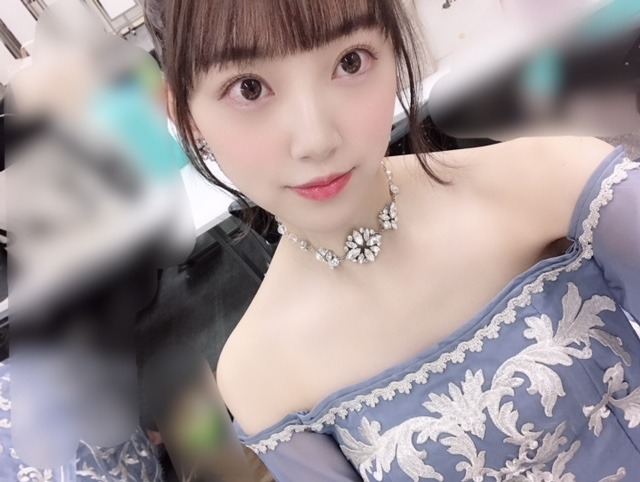

2019/0209Sat犬の毛が目立つよ
私服でパーカーをよく着るのですが
特に黒色のパーカーが好きで
いろんなブランドのを今は集めています☺︎
とにかくラクチンだし
サッとフードを被れば移動中は眠れるし...
有り難い。

(すっぴん失礼します)
(あ、髪きりました)あすかと美月は気づいてくれた
ちなみに携帯ケースも黒で
最近は黒に落ち着くパターンが多いです

夏になったら今まで通り白ばかりになるんだろうけど...
黒の魅力もようやくわかってきて
あー大人やーって思っています☺︎笑
かわいいパーカーがあったら
ぜひ教えてください✨

キラキラ×くすみブルーは
私が世界イチ好きな組み合わせ！
では！
ps.梅干し毎日食べ過ぎて梅干しになりそう...
2019/02/09 18:12
コメント(455)
未央奈ー！！
写真全部可愛すぎ！
大好き！
写真全部可愛すぎ！
大好き！
黒パーカー最高！
未央奈！
パーカーは本当に楽だよね～。
俺も大学や握手会でパーカー着まくってる笑
俺にとって、この季節には必要不可欠な服です！
かわいいパーカーか～。
わからん笑
シンプルなパーカーを何色か持ってるって感じです。
髪切ったんだ！
確かに肩に程よくかかる感じになってる！
パーカーは本当に楽だよね～。
俺も大学や握手会でパーカー着まくってる笑
俺にとって、この季節には必要不可欠な服です！
かわいいパーカーか～。
わからん笑
シンプルなパーカーを何色か持ってるって感じです。
髪切ったんだ！
確かに肩に程よくかかる感じになってる！
チャァオ～～!☆彡
みおちゃん、こんばんは～～⤴️⤴️❕❤️❤️❤️❤️❤️笑顔
おいら、黒買うのは靴下ぐらいかなぁ～～⤴️⤴️❕
いつも洗濯するとき～～～⤴️⤴️
面倒くさがり屋さんなんでぇ～～⤴️⤴️
洗濯洗剤とめっちゃ漂白剤を使うんだぁ～～⤴️⤴️⤴️❕
なのでたまに、黒を洗うとぉ～～～⤴️⤴️⤴️
漂白剤の作用でぇ～～⤴️⤴️・・・
めっちゃまだら模様の赤い錆色に変わちゃうんだぁ～⤴️⤴️⤴️❕
たまに、全部～～～⤴️⤴️
錆色変わるよぉ～～⤴️⤴️❗泣
だから、ホントは黒が好きなんだけどねぇ❕❤️❤️❤️❤️❤️笑顔
洗濯をする時って、仕事で疲れているせいか
いつもの癖でぇいつの間にか、いつも漂白剤を～～・・
ドバドバ入れとる❕
「あぁ❕・・また、やったゃった❕(唖然)」ってぇ❕
おいら、本当に洗濯だけは苦手❕
黒欲しい～～⤴️⤴️❕❤️❤️❤️❤️❤️笑顔
それじゃ～みおちゃん、風邪には気をつけてお仕事頑張ってねぇ❕❤️❤️❤️❤️❤️笑顔❤️❤️❤️❤️❤️
またねぇ❕❤️❤️❤️❤️❤️笑顔
バイバイ❕❤️❤️❤️❤️❤️笑顔
(*^▽^)/★*☆♪❤️❤️❤️
☆大人しい、おすまし！より☆彡
未央奈更新ありがとう！
どの写真も未央奈が可愛くて 携帯のフォルダが潤いそうだよ笑
次の更新楽しみにいてるね！
どの写真も未央奈が可愛くて 携帯のフォルダが潤いそうだよ笑
次の更新楽しみにいてるね！
こんばんみーお♪
ブログありがとう！
梅干しばかり食べていたら
スッパマンになっちゃうよ〜笑笑
みおって、本当に髪伸びるのが早いよね〜
よく、女性の髪は伸ばすのに数年かかるから
本当に大切なんだよ〜って聞くんだけど
みおが標準のワシとしては
いまいちピンとこないんだよね〜
それだけ、みおの髪は伸びるのが早いイメージがある。
ところで、
体調は大丈夫ですか？
ライブや新曲やら撮影やらで大変だと思うけど
眠れる時にはしっかりと寝てね！
時には消化に良いものを食べて
胃腸の負担を軽減してあげる
自分への労わりも大事だよ！
あと、うがいは、いきなり喉うがいはNG！
まずは、歯のあたりのうがいをして
最後に喉の奥のうがいをしてね！
いきなりの喉うがいは、帰って風邪の原因に
なるんだって〜
これ、前にも書いたかな？
おじいちゃんだから、許してね〜笑笑
今、ビーフシチューを食べているよん♪
今日は、ハンズに行って
お年寄りでも簡単にペットボトルの蓋を
開けられるキーホルダーを買って来た〜
それから、アイスを溶かしながら食べられる
アイス用スプーンを買って来た〜
って、既に持っているんだけどね〜
知人に、スプーンに307って文字を入れて貰う
約束をしていていい感じのスプーンを探しているんだ♪
家でよくアイスを食べるからマイスプーンも
凝った物にしたくてね☆
それから、明日は、幕張にグッズを買いに行く予定♪
でも、ネット販売で、基本的に買いたい物は
購入済みなんだけどね〜
卒コンの配信見返し用のカード？を
買おうかと思っているよん♪
土曜日にバスラに参戦して、
日曜日は、新宿バルト９で参戦予定♪
みおも頑張ってね！
そして、楽しんでね☆
あ、それから、今日は仕事が午後休だったので、
huluで、校閲ガールのドラマをずっと観てる♪
観出したら、面白くて今、5話を観ているところ。
今日中に全部は、無理かもだけどね〜笑笑
では、
こないだは2部に菊五郎さんと食事をしていて
結局、会えなかったから、次回の握手で
会おうね〜☆
まだ早いけど
おやすみおな〜☆
P.S.お姉さんの誕生日も近いね〜
わたる⊿
ブログありがとう！
梅干しばかり食べていたら
スッパマンになっちゃうよ〜笑笑
みおって、本当に髪伸びるのが早いよね〜
よく、女性の髪は伸ばすのに数年かかるから
本当に大切なんだよ〜って聞くんだけど
みおが標準のワシとしては
いまいちピンとこないんだよね〜
それだけ、みおの髪は伸びるのが早いイメージがある。
ところで、
体調は大丈夫ですか？
ライブや新曲やら撮影やらで大変だと思うけど
眠れる時にはしっかりと寝てね！
時には消化に良いものを食べて
胃腸の負担を軽減してあげる
自分への労わりも大事だよ！
あと、うがいは、いきなり喉うがいはNG！
まずは、歯のあたりのうがいをして
最後に喉の奥のうがいをしてね！
いきなりの喉うがいは、帰って風邪の原因に
なるんだって〜
これ、前にも書いたかな？
おじいちゃんだから、許してね〜笑笑
今、ビーフシチューを食べているよん♪
今日は、ハンズに行って
お年寄りでも簡単にペットボトルの蓋を
開けられるキーホルダーを買って来た〜
それから、アイスを溶かしながら食べられる
アイス用スプーンを買って来た〜
って、既に持っているんだけどね〜
知人に、スプーンに307って文字を入れて貰う
約束をしていていい感じのスプーンを探しているんだ♪
家でよくアイスを食べるからマイスプーンも
凝った物にしたくてね☆
それから、明日は、幕張にグッズを買いに行く予定♪
でも、ネット販売で、基本的に買いたい物は
購入済みなんだけどね〜
卒コンの配信見返し用のカード？を
買おうかと思っているよん♪
土曜日にバスラに参戦して、
日曜日は、新宿バルト９で参戦予定♪
みおも頑張ってね！
そして、楽しんでね☆
あ、それから、今日は仕事が午後休だったので、
huluで、校閲ガールのドラマをずっと観てる♪
観出したら、面白くて今、5話を観ているところ。
今日中に全部は、無理かもだけどね〜笑笑
では、
こないだは2部に菊五郎さんと食事をしていて
結局、会えなかったから、次回の握手で
会おうね〜☆
まだ早いけど
おやすみおな〜☆
P.S.お姉さんの誕生日も近いね〜
わたる⊿
みおちゃんブログ更新ありがとう♪
すっぴん可愛いすぎ ❤
髪切ったのわ、わかったよ←
黒好きなんだ＼(^^)／俺も黒好きだけど、青の方が好きかも笑
パーカーならしまむらのスヌーピーパーカーが、色黒やし可愛いしオススメだよ( ^_^)／
すっぴん可愛いすぎ ❤
髪切ったのわ、わかったよ←
黒好きなんだ＼(^^)／俺も黒好きだけど、青の方が好きかも笑
パーカーならしまむらのスヌーピーパーカーが、色黒やし可愛いしオススメだよ( ^_^)／
すっぴんもめっちゃ可愛い！！
未央奈ちゃんこんばんは‼ありがとうございます‼楽しみにしてます！頑張ります‼凄いや。凄い人です！ありがとうございます‼
僕も毎日梅干し食べてるよー！！
ほんとにかわいい！更新ありがとう
堀ちゃんかわいい！！
バスラ頑張ってください！！
バスラ頑張ってください！！
初めまして✨
さっき丸デブsunがウドCＨの旅ゴメに出ててお店をネットで調べたら堀未央奈sunが岐阜市出身でよくお店にみえるって知りましたぁ(^o^)
乃木坂46に僕と同じ岐阜県民が居るなんてなんか嬉しいなぁ(*’ω’ﾉﾉﾞ☆ﾊﾟﾁﾊﾟﾁ
頑張って下さいね
さっき丸デブsunがウドCＨの旅ゴメに出ててお店をネットで調べたら堀未央奈sunが岐阜市出身でよくお店にみえるって知りましたぁ(^o^)
乃木坂46に僕と同じ岐阜県民が居るなんてなんか嬉しいなぁ(*’ω’ﾉﾉﾞ☆ﾊﾟﾁﾊﾟﾁ
頑張って下さいね
いま舞台ザンビBLACK観終わった〜
やっぱり生の演出はいいよね(^-^)
未央奈の舞台も観てみたいよ＼(^o^)／
自分も黒のアイテムが落ち着く！
やっぱり生の演出はいいよね(^-^)
未央奈の舞台も観てみたいよ＼(^o^)／
自分も黒のアイテムが落ち着く！
未央奈かわいい
みおちゃんパーカー好きなんだね！
moussyのパーカー個人的にオススメ！
シンプルで何にでも合うと思うよ！
moussyのパーカー個人的にオススメ！
シンプルで何にでも合うと思うよ！
とてもかわいいです これからもずっと応援してます！
可愛すぎて眩しい…
大好き！
大好き！
みおたんきゃわたん♡
今日も更新ありがとう！
やっぱり未央奈可愛い～
やっぱり未央奈可愛い～
パーカーはいいよな(志村けん風に言ってみる)
警告！素っぴん可愛い過ぎ(^∇^)！
KENZOのパーカーとか刺繍入って可愛いよ！
モバメいつも送ってくれるし最高
黒のパーカーおススメ韓国のブランドですがADERERROR(アーダーエラー)です。是非見てください〜
パーカー、僕もよく着とるよ！
コーデしやすいから良いよね☺️
コーデしやすいから良いよね☺️
ぱーかー？
あ、私も髪を切ったの気付きました…はい。早く目の痛みが治るといいね。
この時期ってついついパーカー着たくなっちゃうよね(⌒▽⌒)
あんまり何着るか考えなくていいし、オシャレなのも多い！
セミロング？なのかな。そのぐらいの長さだとアレンジの幅が広くていいよね！(すっぴんも最高です)
ps.唐揚げ食べすぎで唐揚げになりそう…
あおば。
あんまり何着るか考えなくていいし、オシャレなのも多い！
セミロング？なのかな。そのぐらいの長さだとアレンジの幅が広くていいよね！(すっぴんも最高です)
ps.唐揚げ食べすぎで唐揚げになりそう…
あおば。
ブログ更新ありがとー^_^
すっぴん、すごい透明感！やっぱりすげーや笑
未央奈ちゃん、黒パーカー似合うよね！
おすすめはKANGOLとFREAK'S STOREのコラボパーカー！
黒パーカーの胸元のKANGOLの文字がそれぞれカラフルになっていて、可愛い系でもカッコいい系のファッションでもいけると思うよ！
パーカー集めたら、いろんなキャップ、ハンチングとかニット帽も合わせてみるのも楽しいよね！
新しいパーカー買ったら、紹介してほしいな(^O^)
また寒くなってきたから、あったかくして、風邪とかひかないようにね！
応援してます！
すっぴん、すごい透明感！やっぱりすげーや笑
未央奈ちゃん、黒パーカー似合うよね！
おすすめはKANGOLとFREAK'S STOREのコラボパーカー！
黒パーカーの胸元のKANGOLの文字がそれぞれカラフルになっていて、可愛い系でもカッコいい系のファッションでもいけると思うよ！
パーカー集めたら、いろんなキャップ、ハンチングとかニット帽も合わせてみるのも楽しいよね！
新しいパーカー買ったら、紹介してほしいな(^O^)
また寒くなってきたから、あったかくして、風邪とかひかないようにね！
応援してます！
オフホワイトのパーカーとかはどうですか‼️
未央奈ちゃん黒も白も似合う！！
黒が似合う人って大人なイメージ ︎☺︎❤︎
黒が似合う人って大人なイメージ ︎☺︎❤︎
堀ちゃんブログ更新ありがとう！
パーカーいいよね自分も今黒のパーカーだわ…乃木坂AWのパーカーは白か黒どっち買うか迷うなぁ〜
堀さん本来の髪の長さがもうわからなくなってしまっている自分に対して飛鳥さんたちはさすがですね…自分ももっと推しメンに目を光らせねば。堀ちゃんの髪の毛の質感好きだからね〜。
自分は最近堀ちゃんの写真集を毎日読んでます。読めば読むほど良い写真集で…原っぱで笑ってる写真が一番好きかな〜、2nd写真集、とっても期待してしまいます…
貴女梅干し食べすぎよ！笑モバメでも定期的に梅干しの話してくれるけど、いつのまにか梅を推しているなんてことになってはアレなので適度にね！
堀ちゃんつながりでたくさんの知り合いができています。ファン１人と堀ちゃんのつながりを増やすだけじゃなく、ファン同士も繋げてしまう堀ちゃんのパワーがだいすき。これからもずっと応援します！
パーカーいいよね自分も今黒のパーカーだわ…乃木坂AWのパーカーは白か黒どっち買うか迷うなぁ〜
堀さん本来の髪の長さがもうわからなくなってしまっている自分に対して飛鳥さんたちはさすがですね…自分ももっと推しメンに目を光らせねば。堀ちゃんの髪の毛の質感好きだからね〜。
自分は最近堀ちゃんの写真集を毎日読んでます。読めば読むほど良い写真集で…原っぱで笑ってる写真が一番好きかな〜、2nd写真集、とっても期待してしまいます…
貴女梅干し食べすぎよ！笑モバメでも定期的に梅干しの話してくれるけど、いつのまにか梅を推しているなんてことになってはアレなので適度にね！
堀ちゃんつながりでたくさんの知り合いができています。ファン１人と堀ちゃんのつながりを増やすだけじゃなく、ファン同士も繋げてしまう堀ちゃんのパワーがだいすき。これからもずっと応援します！
みおなさーーん！！
チョコレートジーザーズっていうブランドのパーカーおススメしますよ！！めっちゃ可愛いです！
良かったら是非着てみて下さい！！
チョコレートジーザーズっていうブランドのパーカーおススメしますよ！！めっちゃ可愛いです！
良かったら是非着てみて下さい！！
すっぴんでこのクオリティかよー！！！
どこまでカワイイんかいっ笑笑
かわいいパーカーは
ロンズデールとかエバーラスト！！！
男が着るとカッコイイ系になるけど
女の子が着るとかわいくなる♪
不思議なパーカーが満載！！
どこまでカワイイんかいっ笑笑
かわいいパーカーは
ロンズデールとかエバーラスト！！！
男が着るとカッコイイ系になるけど
女の子が着るとかわいくなる♪
不思議なパーカーが満載！！
すっぴんかわすぎる
梅干し毎日食べてる
梅干し毎日食べてる
すっぴんめっちゃキレイですね
梅干しも美容に良さそう
梅干しも美容に良さそう
すっぴんでこんなかわいいとかやばいって！
わたしもパーカーだいすきです
わたしもパーカーだいすきです
ブログの更新、2日連続ありがとう！
パーカー、黒がいいなら、だいたいぜんぶ展のやつ、黒を買ってよー
黒っていうより、モノトーンの素晴らしさが分かってきたって思うと、大人だなーって思うよね！
あんまり色んな色を使わないで、派手な配色にしないで、落ち着いたオシャレさを出せる人は羨ましい！！そういうデザインができるようになりたい！
個人的には、スポーツメーカーが出してるスポーツ用じゃないパーカーが好き！
着ていて楽なのが好み！
個人的にはadidasとかUNDER ARMOURとかが好きかなー
今日は朝からメチャメチャ寒かったけど、体調崩してない？寒さだけでなく、前後との気温差も要注意だから、体調に気を付けてね！
応援しているよ！
パーカー、黒がいいなら、だいたいぜんぶ展のやつ、黒を買ってよー
黒っていうより、モノトーンの素晴らしさが分かってきたって思うと、大人だなーって思うよね！
あんまり色んな色を使わないで、派手な配色にしないで、落ち着いたオシャレさを出せる人は羨ましい！！そういうデザインができるようになりたい！
個人的には、スポーツメーカーが出してるスポーツ用じゃないパーカーが好き！
着ていて楽なのが好み！
個人的にはadidasとかUNDER ARMOURとかが好きかなー
今日は朝からメチャメチャ寒かったけど、体調崩してない？寒さだけでなく、前後との気温差も要注意だから、体調に気を付けてね！
応援しているよ！
梅干し堀さん（←言い方！ 笑）、こんばんは。
屋外は凍えるほど寒いのに、建物や電車の中は暖房効いて暑いくらい。そんな今の季節、脱ぎ着しやすいパーカーは重宝します。黒のパーカーは落ち着きますね。
冬は黒を身にまとい、夏には白を着こなす堀さん。まるで……雷鳥さんみたい（←言い方っ！ 笑）。
梅干しは健康食品ですが、食べ過ぎは塩分摂り過ぎが心配。ほどほどに楽しみましょう。
ではまたコメントします。
さらばだ、また会おう！（気球に乗って去りぬ～）
屋外は凍えるほど寒いのに、建物や電車の中は暖房効いて暑いくらい。そんな今の季節、脱ぎ着しやすいパーカーは重宝します。黒のパーカーは落ち着きますね。
冬は黒を身にまとい、夏には白を着こなす堀さん。まるで……雷鳥さんみたい（←言い方っ！ 笑）。
梅干しは健康食品ですが、食べ過ぎは塩分摂り過ぎが心配。ほどほどに楽しみましょう。
ではまたコメントします。
さらばだ、また会おう！（気球に乗って去りぬ～）
未央奈ブログ更新ありがとう☆
梅干し食べ過ぎて梅干しになっちゃうの？
そしたら未央奈は酸っぱくなっちゃうの笑
梅干し食べ過ぎて梅干しになっちゃうの？
そしたら未央奈は酸っぱくなっちゃうの笑
こんばんは
犬の毛の掃除は大変そうやね～
黒パーカーはコーデもし易いですよねー！
ぜんぶ展の黒パーカーもおすすめですよ◎
パーカーをパジャマにしてる人もいるけど、
たまにしか着ないと首が凝るんだよね～笑
俺の携帯電話もずっと黒ばっかりだし、
結局は黒に落ち着くパターンが多いですよ♪
キラキラ×くすみブルーの組み合わせは、
とっても落ち着いていて大人っぽいですね☆
オフショルの衣装姿は凄くエレガントだし、
髪を少し切ったらさっぱりした感じですね♡
そして、未央ちゃんは、、
すっぴんが一番可愛いらしいと思いますよ♡
でも、梅干しは甘めの方が食べ易いです～☺
犬の毛の掃除は大変そうやね～
黒パーカーはコーデもし易いですよねー！
ぜんぶ展の黒パーカーもおすすめですよ◎
パーカーをパジャマにしてる人もいるけど、
たまにしか着ないと首が凝るんだよね～笑
俺の携帯電話もずっと黒ばっかりだし、
結局は黒に落ち着くパターンが多いですよ♪
キラキラ×くすみブルーの組み合わせは、
とっても落ち着いていて大人っぽいですね☆
オフショルの衣装姿は凄くエレガントだし、
髪を少し切ったらさっぱりした感じですね♡
そして、未央ちゃんは、、
すっぴんが一番可愛いらしいと思いますよ♡
でも、梅干しは甘めの方が食べ易いです～☺
未央奈ちゃんは何色でも似合っちゃうね！常に可愛くなってて女子力分けてほしい（笑）また握手会行くねー！
未央奈ちゃんブログ更新有難う
パーカーは確かに楽だねぇ
そして黒は一番合わせやすい色だからね。
今度プリン会のお話きかせてね( ^ω^ )
パーカーは確かに楽だねぇ
そして黒は一番合わせやすい色だからね。
今度プリン会のお話きかせてね( ^ω^ )
堀ちゃんこんばんは
ブログ更新お疲れ様です(^o^)
パーカーはザ・ノース・フェイスが機能的で
梅干しは体にいいから毎日食べるといいっすよね！
では
ブログ更新お疲れ様です(^o^)
パーカーはザ・ノース・フェイスが機能的で
梅干しは体にいいから毎日食べるといいっすよね！
では
こんばんは！ブログ更新ありがとう
可愛いですよ
あまり無理せずファイトです( ﾟ∀ﾟ)人(ﾟ∀ﾟ )
可愛いですよ
あまり無理せずファイトです( ﾟ∀ﾟ)人(ﾟ∀ﾟ )
俺も梅干し好きー
堀ちゃんのすっぴん可愛さ溢れ出てもーてるやん
最近合宿でやたら梅干し出されるんですけど、
代わりにたべてくれませんか？
代わりにたべてくれませんか？
未央奈ー！THRASHERのパーカーめちゃくちゃ可愛いよ！！俺も黒持ってけどシンプルでも可愛いって最高のパーカーだよー！


すっぴんもかわいい～